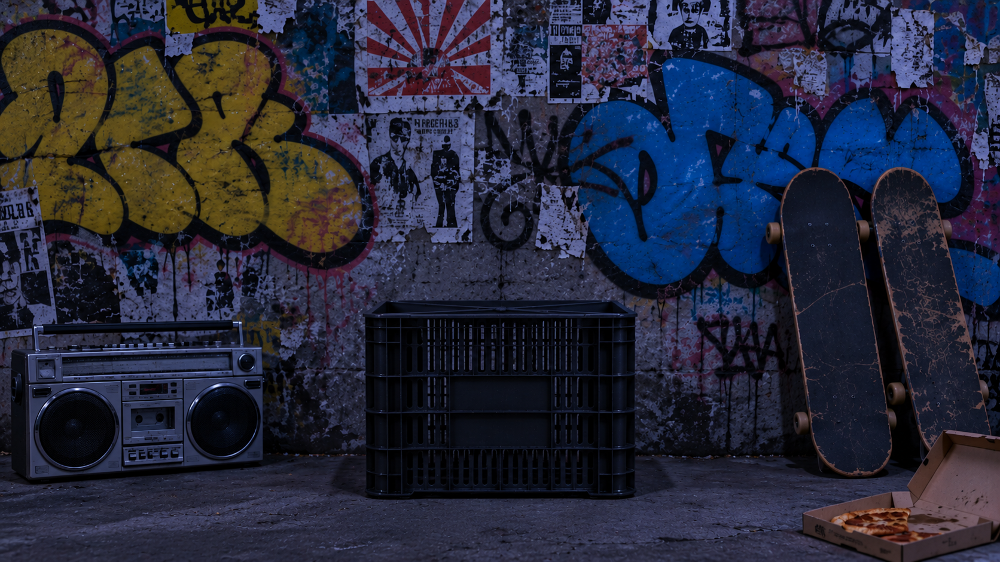
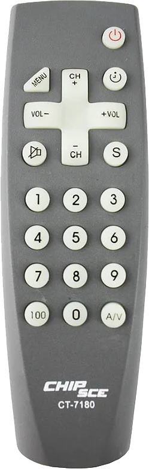

clique na TV
CH+ / CH− navegar · 0-9 pular · S confirmar · MENU sair
TEXTO PROVISÓRIO: edite este bloco em index.html (section#sobre-texto).
A StreetTV é uma televisão que só passa cultura de rua: rap, funk, entrevistas, batalhas, graffiti e pixo. A ideia é manter vivo o legado das artes periféricas e dar visibilidade a mídias que podem ser inéditas para muita gente.
Cada canal é uma obra. Mude de canal no controle e descubra.

Gire o aparelho para ver a StreetTV